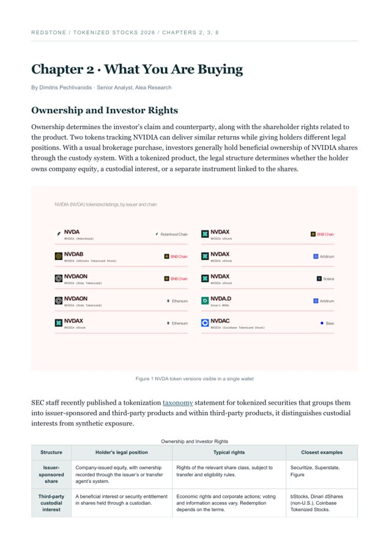

INDEX / 2025—2026
01Sector Wide Reports
02Investment theses
03Investment memos
04IR decks
05Data tools
01 / START HERE
Selected work


02 / FULL LIBRARY
Work Samples
A small selection from more than 50 reports I've produced across Alea Research and Revelo.
PDF editions preserve original publication credit and link back to the source. Market views reflect their publication dates.
03 / BUILT WORK
Data & product tools
Public projects with code or live previews.
Atlas Chart Builder
A CSV chart builder for research data, with chart export and configurable data sources.
Alea Signal
A Polymarket researchability screener for crypto, finance, and economy markets. Public preview.
MANTIS
A Greek-first prediction-market product prototype. Demo only; no real-money trading.
D / RESEARCH PRODUCT
Alea Data Rooms
Protocol research in one place: what the business does, how value accrues, the data behind the case, and dated research notes.
04 / THE PERSON BEHIND THE WORK
About
Give a damn and you'll be great.
I've evaluated more than 50 businesses and protocols, sourced at least 20 blockchain startups, and invested in many of them. I've also invested in robotics and AI companies. Skin in the game matters to me. I put my conviction up for judgment, test the assumptions behind it, and change my mind when the evidence calls for it.
Client work matters just as much. At Alea Research, I've helped teams raise money, shape go-to-market strategies and business models, plan incentive campaigns, and prepare investor materials. The work goes beyond a report: I stay involved with the decisions teams have to make.
Before research, I spent twelve years in competitive football and five years in sales in Greece. Both taught me to care about the result. A match ends. A client buys or walks away. I bring the same attitude to research and investing.
Read more of my writing on Substack